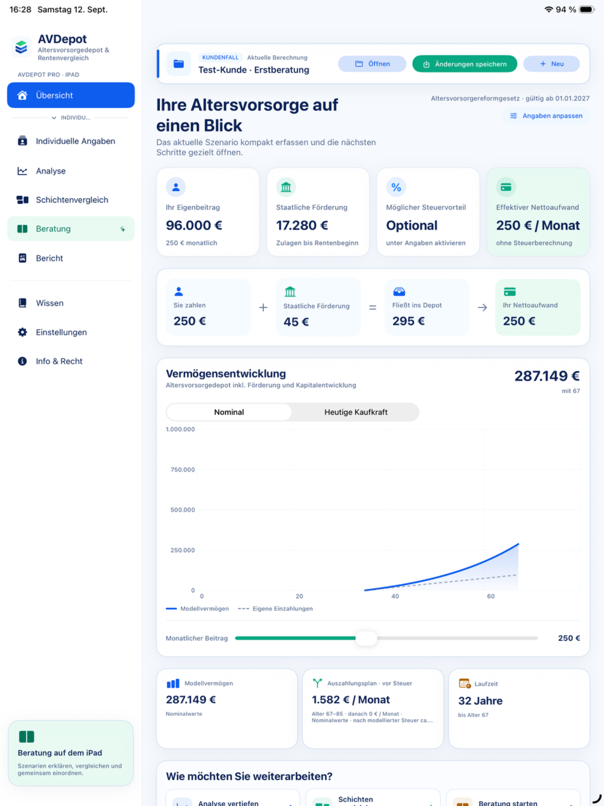
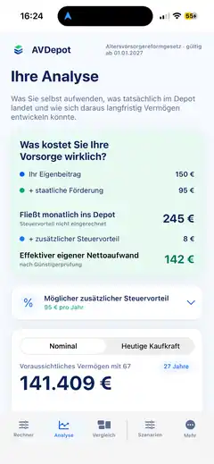
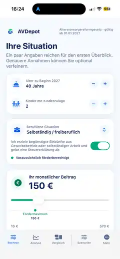
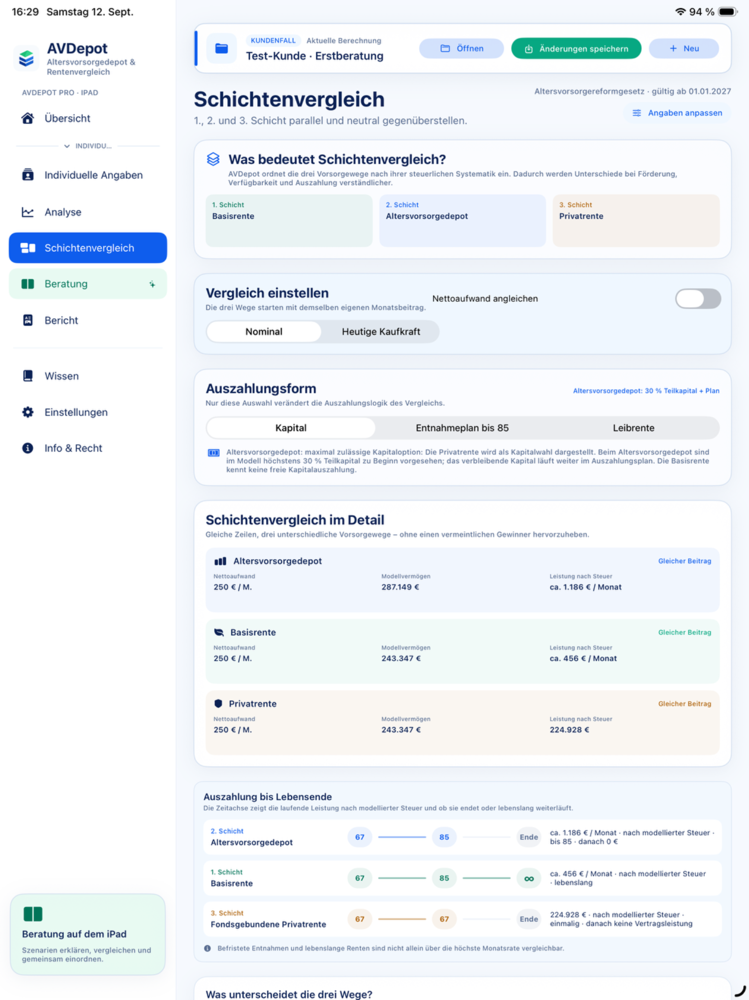

Verstehen, was wirkt.
Eigenbeitrag, mögliche Förderung und Steuerwirkung zusammen betrachten. Damit Sie Ihren tatsächlichen Aufwand besser einordnen können.
GUTE ENTSCHEIDUNGEN BEGINNEN MIT KLARHEIT
Verstehen, was heute möglich ist. Erkennen, was morgen daraus werden kann. AVDepot macht Altersvorsorge vergleichbar – auf Ihrem iPhone und iPad.
Vorsorge verstehen · Möglichkeiten kombinieren


FÜR IHRE PERSÖNLICHE VORSORGE
Was kostet mich meine Vorsorge tatsächlich? Welche Möglichkeiten passen zu mir? Machen Sie die Unterschiede sichtbar.
Eigenbeitrag, mögliche Förderung und Steuerwirkung zusammen betrachten. Damit Sie Ihren tatsächlichen Aufwand besser einordnen können.
Altersvorsorgedepot, Basisrente und private Rentenversicherung im Vorsorgemix kombinieren – von der Ansparphase bis zur Auszahlung.
Mit Pro das Vorsorgebudget individuell aufteilen, Annahmen variieren und die persönliche Versorgungslücke betrachten.

SO FÜHLT SICH ÜBERBLICK AN
Die wichtigsten Zusammenhänge immer dabei. Entdecken Sie AVDepot direkt aus der App.
Rechner · Schritt für Schritt zur persönlichen Modellrechnung.
MEHR RAUM FÜR IHRE BERATUNG
Auf dem iPhone schnell orientieren. Auf dem iPad Zusammenhänge vertiefen: mehr Platz für Vergleiche, Szenarien und verständliche Gespräche über Vorsorge.

FÜR PROFESSIONELLE BERATER
BERATUNGSFUNKTIONEN IN ERPROBUNGDigitale Vorsorgeplanung und persönliche Beratung verbinden: mit Beratungsanfragen aus der App, persönlicher Beraterzuordnung und einem modularen Arbeitsplatz für das Beratungsgespräch.
Consultant entdecken ↓Die technisch umgesetzte Anfragefunktion verbindet die App mit dem Beraterbereich. Sie wird derzeit mit Testdaten erprobt. Ein persönlicher Berater-QR-Code oder eine Beraterkennung verbindet sie mit dem zuständigen Berater. Anfragen ohne persönliche Zuordnung gelangen an die zentrale Eingangsstelle.
Leads generieren. Beratungsgespräche anbahnen.Ein persönlicher Beraterlink macht den Kontakt leicht. Die Zuordnung begleitet die Anfrage in den geschützten Lead-Eingang des Webportals.
Analyse, Vergleich und Empfehlung frei einsetzen. Module gezielt öffnen und Varianten nachvollziehbar präsentieren.
Unternehmensprofil, Logo und Kontaktdaten einbinden. Berichtsbausteine auswählen und nächste Schritte dokumentieren.
Beratungsanfragen im Blick.
Auch im Browser.
Persönliche Zugänge, zugeordnete Leads und Bearbeitungsstatus. Die zentrale Verwaltung kann Anfragen Beratern zuweisen – im Browser auf Windows, macOS und Tablets.
Derzeit in Erprobung mit Testzugängen und Testdaten. Keine öffentliche Registrierung oder Freigabe für echte Kundendaten.
FÜR DEN EINSTIEG. FÜR MEHR TIEFE. FÜR IHRE BERATUNG.
Vier Varianten für Ihre Vorsorgeplanung und Beratung.
VERSTEHEN & KOMBINIEREN
Für den Einstieg in Ihre persönliche Vorsorgeplanung.
VERTIEFEN & PLANEN
Für Ihre individuellen Annahmen und Vorsorgeziele.
PROFESSIONELL BERATEN
Für persönliche Beratung und digitale Kundengewinnung.
GEMEINSAM ARBEITEN
Für Führungskräfte und Organisationseinheiten.
AVDepot befindet sich derzeit nicht im öffentlichen Produktivbetrieb.
DIE UNTERSCHIEDE AUF EINEN BLICK
Die wichtigsten Funktionen im Überblick.
| Funktion | Basic | Pro |
|---|---|---|
| Rechner und Grundanalyse | ✓ | ✓ |
| Vergleich der drei Vorsorgebausteine | ✓ | ✓ |
| Vorsorgemix: Ausgewogen, Förderung, Flexibilität | ✓ | ✓ |
| Individuelle Aufteilung des Vorsorgebudgets | – | ✓ |
| Förderung, Nettoaufwand und Auszahlung | ✓ | ✓ |
| Heutige Kaufkraft | – | ✓ |
| Persönliche Rentenlücke | – | ✓ |
| Erweiterte Szenarien | – | ✓ |
| Detaillierte Steueranalyse | – | ✓ |
| PDF-Berichte und iPad-Beratungsansicht | – | – |
✓ enthalten · – nicht enthalten. PDF-Berichte und die professionelle iPad-Beratungsansicht gehören zum Consultant-Bereich.
AVDepot ist für iPhone und iPad entwickelt. Das ergänzende Webportal läuft im Browser auf Windows, macOS und Tablets. Der Portalzugang ist freigegebenen Benutzern vorbehalten.
Basic verbindet Rechner, Analyse, Vergleich und drei Vorsorgemix-Ausrichtungen. Pro ergänzt individuelle Aufteilung, Kaufkraft, Rentenlücke und Szenarien. Consultant ergänzt den professionellen Beratungsarbeitsplatz, Berichte und persönliche Beraterzuordnung. Consultant Team richtet sich an Führungskräfte und Organisationseinheiten mit dem Schwerpunkt auf Teamverwaltung, zentraler Leadübersicht, Leadverteilung und teambezogenen Auswertungen.
Die Anfragefunktion wird derzeit mit Testdaten erprobt. Eine Anfrage wird bewusst aus der App abgesendet. Mit persönlichem Beratercode oder QR-Link kann sie dem zugehörigen Berater zugeordnet werden. Ohne persönliche Zuordnung geht sie an die zentrale Eingangsstelle. Im Webportal lassen sich zugeordnete Anfragen und ihr Bearbeitungsstand verwalten.
Berechnungen erfolgen auf dem Gerät. Beim bewussten Versand einer Anfrage werden Kontaktdaten übermittelt; Berechnungsinformationen nur auf Wunsch. Derzeit sind ausschließlich Testdaten vorgesehen. Die Datenschutzhinweise werden vor dem öffentlichen Einsatz aktualisiert.
Beiträge, Laufzeit, Rendite, Kosten, Steuern und Auszahlung beeinflussen das Ergebnis. Modellwerte sind keine garantierten Leistungen und ersetzen keine individuelle Beratung.
Es gelten die jeweiligen gesetzlichen Regelungen und der ausgewiesene Rechenstand. Reformannahmen garantieren keine künftige Förderung. Aktuelle Informationen: Bundesfinanzministerium.
DER ERSTE SCHRITT IST EIN KLARER BLICK.